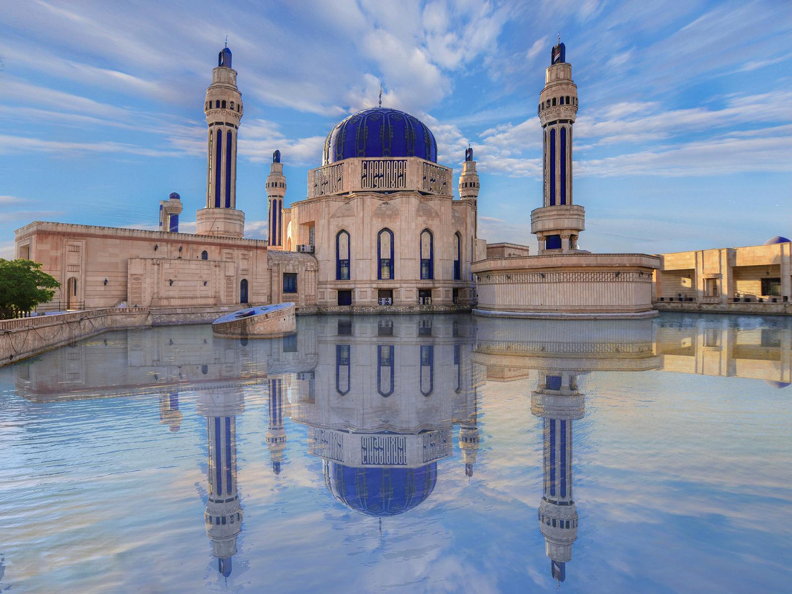

Welcome to
Al Bukhary Masjid
Spreading the Qur’an and the Sunnah according to the understanding of the righteous predecessors (Salaf) of the Ummah.
Serving the Kurdish community in particular.
Build for the Future
The New Mosque Project
Our community is growing rapidly, and our current facility has reached its absolute limit. Help us build a purpose-built Masjid to accommodate everyone.
Expanded Spaces
Larger prayer areas so no one prays on pavements during Jummah.
New Classrooms
Dedicated spaces for madrassa and weekend Islamic education.
Get Involved Today
Help light the path for generations to come.
Educational Programs
Weekly Lectures
Treasures of the Qur'an
Tafseer and deeper understanding of the Holy Book.
The Garden of Hadiths
Study of Sahih Al-Bukhary.
Schedule: Tuesday, Thursday, Friday
Our Services
Islamic Education
Comprehensive Madrasa for children and adults focusing on Quran and Tajweed.
Zakat & Charity
Collection and distribution of Zakat, Sadaqah, and running food banks.
Marriage (Nikah)
Official Islamic ceremonies and pre-marital counseling.
Funeral Services
Complete Janazah services including Ghusl, shrouding, and burial.